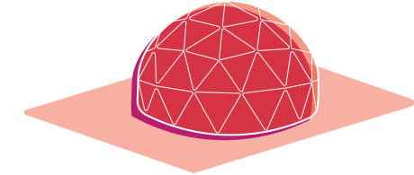
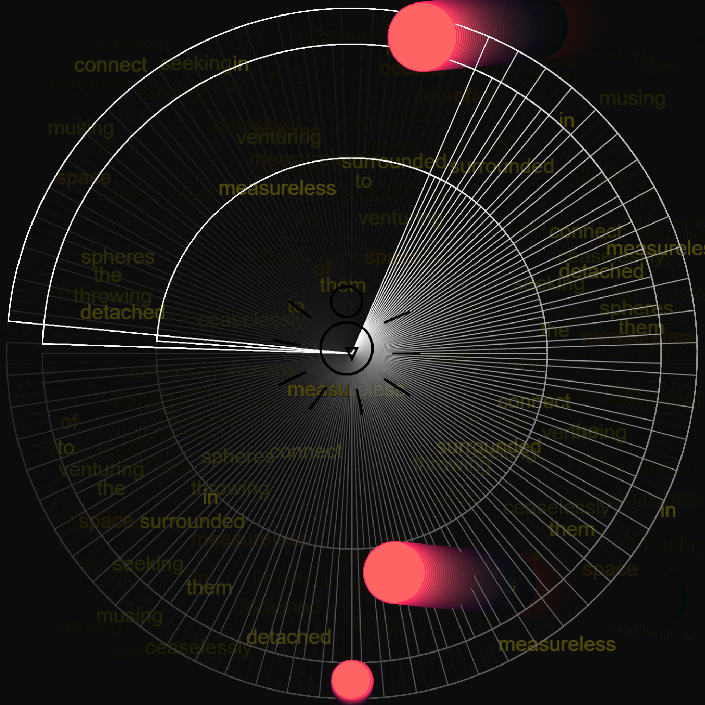

PROJECTS
AMYGDALA

details
adobe premiere pro, adobe after effects, blender, video | 2021A collection of recreated memories installed in 3D virtual space. Hosted on New Art City: https://newart.city/show/asra
THE FUTURE DEMOCRACIES LABORATORY
details
html, css, javascript, adobe illustrator | 2021Work in progress! Please see the About page for more information on this project.
SPHEORIZE
details
adobe after effects | 2021An interesting reflection on my current state of mind. Am I self-aware or self-absorbed?
Click on the fullscreen icon to see the teeny details.
SAVi LOGO

details
adobe illustrator | 2021Logo for SAVi, the Spatial Analytics & Data Visualization Center at SJSU's Department of Urban & Regional Planning.
OUR VIRUS

details
p5.js javascript library, html, css | 2020This interactive piece is a reflection on the Coronavirus, and the everlasting impact and connections between biological, technological, & ideological viruses.
BOOK COVERS

details
adobe illustrator | 2020A select few from my collection of redesigned book covers.
BJERG
details
html, css, adobe illustrator | 2020My first foray into speculative design explores an exclusive society that leaves behind all the biological and physical problems we face today.
LITTLE CEASARS LOGO & ICONS

details
adobe illustrator | 2020My reimagining of the beloved pizzeria's branding.
WWW DOT
details
p5.js javascript library, html, css | 2019“Surrounded, detached, in measureless oceans of space,
Ceaselessly musing, venturing, throwing, seeking the spheres to connect them”
─ Excerpt from A Noiseless Patient Spider by Walt Whitman, 1868
These lines of Whitman’s poem are referring to his soul which, like a spider web, strives to create connections. Even though the poem was written centuries before the internet was created, I felt like those lines really reflected the World Wide Web which is why I wanted to incorporate them into my project. The colorful circles approaching the center of the web are my abstract representation of flies. The spider represents the users of the web/internet. The chaotic display of the text showcases how vast and abundant with information the internet is that people can often get lost in it. The spider can also get lost in the spider web as its web gets larger and more intricate. The spider is consumed by its own creation just like we are with ours.
KSJS PROMO
details
avid pro tools, audio recording | 2018I used audio recordings of my voice, a music box, microwave, bottles of liquid bubbling, and clips from the television show Spongebob Squarepants to create an interesting commercial for SJSU's student run radio program, KSJS.
EdD LOGO

details
adobe illustrator | 2018New logo for the EdD Leadership Program at SJSU's Lurie College of Education. Unfortunately it's currently not in use due to university regulations.